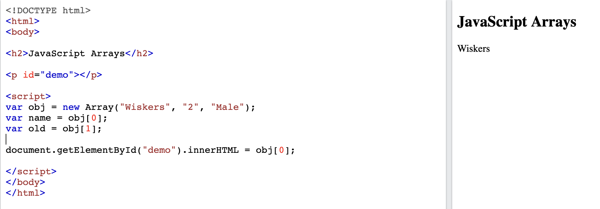
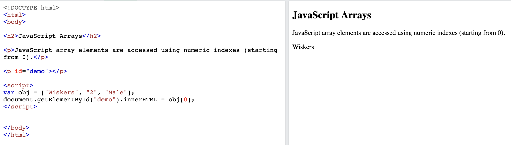
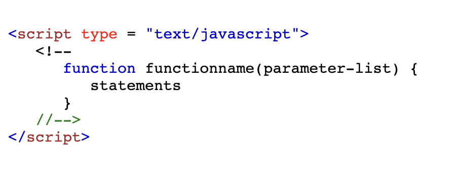

JavaScript and its relationship to HTML and CSS.
HTML stands for Hypertext Markup Language. It creates the structure of a website.Let’s use a house as an analogy. Think about the house you currently live in.
CSS stands for Cascading Stylesheets. It lets you make a website look nicer. In industry terms, we say you “style” a website with CSS.
JavaScript HTML and CSS are static. You cannot change HTML and CSS (by changing the HTML or CSS file) after a website gets loaded. But JavaScript gives you the ability to change the HTML and CSS on the page.
Explain the difference between accessing data from arrays and objects.
Objects are mutable data structure in javascript which is used to represent a ‘Thing’. This could be anything like cars, plants, person, community etc.
It stores the data in key value pair and the key can be anything except for undefined. The keys are iterable and can be accessed in any order.

We can either use a dot operator followed by key name obj.name or a square bracket along with key in string format obj['name'] to access the value.
Arrays are objects only in javascript. The major difference is that they store the data in an ordered collection in which the data can be accessed using a numerical index.
They are also mutable and data can be modified at any index. Indexes are zero based which means the first item is stored at Oth index, second at first and so on, last item is stored at n-1th index.

Explain what functions are and why they are useful.
A function in JavaScript is a special type of objects that allows you to formalize certain logic of behavior and data processing by means of the language.
A function is a group of reusable code which can be called anywhere in your program. This eliminates the need of writing the same code again and again. It helps programmers in writing modular codes. Functions allow a programmer to divide a big program into a number of small and manageable functions.
Function Definition
Before we use a function, we need to define it. The most common way to define a function in JavaScript is by using the function keyword, followed by a unique function name, a list of parameters (that might be empty), and a statement block surrounded by curly braces.
